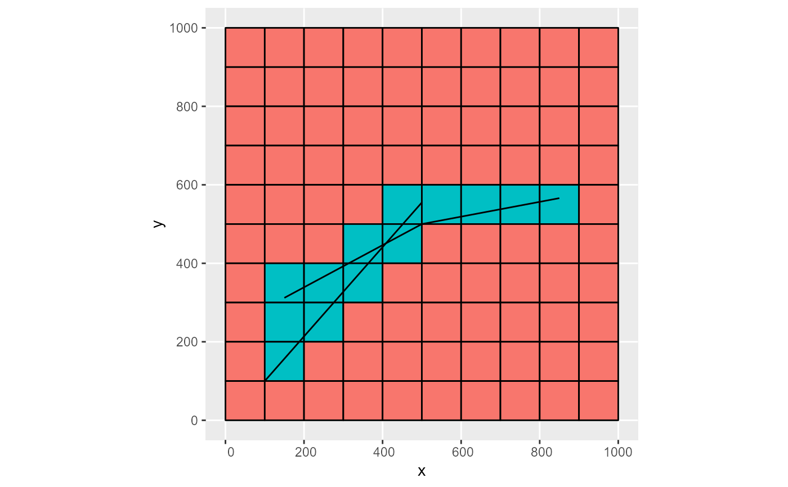

Convert a simple features object to rmf_list
# S3 method for sf rmf_as_list( obj, dis, select = colnames(sf::st_set_geometry(obj, NULL)), prj = rmf_get_prj(dis), k = NULL, kper = attr(obj, "kper"), op = sf::st_intersects, ... )
Arguments
| obj |
|
|---|---|
| dis |
|
| select | integer or character specifying columns from |
| prj |
|
| k | optional integer vector of length |
| kper | optional integers specifying the stress-periods during which this rmf_list is active |
| op | geometric operator to use in the spatial join. Defaults to |
| ... | additional arguments passed to |
Value
a RMODFLOW rmf_list object
Details
A spatial join between the MODFLOW grid (as polygons) and obj is performed using sf::st_join(left = FALSE, op = op).
The geometric operator op can be any kind described in the sf help pages. See ?sf::st_intersects.
Examples
dis <- rmf_create_dis() # point pts <- sf::st_sfc(list(sf::st_point(c(150, 312)), sf::st_point(c(500, 500)), sf::st_point(c(850, 566)))) obj <- sf::st_sf(q = c(-500, -400, -300), geom = pts) (rlst <- rmf_as_list(obj, dis))#> RMODFLOW list with 6 features and 1 variable #> Not representing stress period data #> i j k q #> 1 7 2 1 -500 #> 2 6 5 1 -400 #> 3 6 6 1 -400 #> 4 5 5 1 -400 #> 5 5 6 1 -400 #> 6 5 9 1 -300# 4 cells selected for second point on cell edges rmf_plot(rlst, dis, k = 1, grid = TRUE) + ggplot2::geom_sf(data = obj, inherit.aes = FALSE)#>#> RMODFLOW list with 3 features and 1 variable #> Not representing stress period data #> i j k q #> 1 8 3 2 -500 #> 2 7 6 2 -400 #> 3 7 10 3 -300# multipoint mp <- sf::st_multipoint(rbind(c(150,312), c(500, 500), c(850, 566))) obj <- sf::st_sf(q = -500, geom = sf::st_sfc(mp)) rmf_as_list(obj, dis)#> RMODFLOW list with 6 features and 1 variable #> Not representing stress period data #> i j k q #> 1 7 2 1 -500 #> 2 6 5 1 -500 #> 3 6 6 1 -500 #> 4 5 5 1 -500 #> 5 5 6 1 -500 #> 6 5 9 1 -500# linestring s1 <- rbind(c(150,312), c(500, 500), c(850, 566)) ls1 <- sf::st_linestring(s1) s2 <- rbind(c(100,100), c(500, 555)) ls2 <- sf::st_linestring(s2) obj <- sf::st_sf(conductance = 500, quality = c('good', 'poor'), geom = sf::st_sfc(ls1, ls2)) rmf_as_list(obj, dis, select = 'conductance')#> RMODFLOW list with 23 features and 1 variable #> Not representing stress period data #> i j k conductance #> 1 7 2 1 500 #> 2 7 3 1 500 #> 3 7 4 1 500 #> 4 6 4 1 500 #> 5 6 5 1 500 #> 6 6 6 1 500 #> 7 5 5 1 500 #> 8 5 6 1 500 #> 9 5 7 1 500 #> 10 5 8 1 500 #> 11 5 9 1 500 #> 12 10 1 1 500 #> 13 10 2 1 500 #> 14 9 1 1 500 #> 15 9 2 1 500 #> 16 8 2 1 500 #> 17 8 3 1 500 #> 18 7 3 1 500 #> 19 7 4 1 500 #> 20 6 4 1 500 #> 21 6 5 1 500 #> 22 5 5 1 500 #> 23 5 6 1 500# multilinestring mls <- sf::st_multilinestring(list(s1, s2)) obj <- sf::st_sf(conductance = 500, quality = 'mixed', geom = sf::st_sfc(mls)) rmf_as_list(obj, dis) %>% rmf_plot(dis, k = 1, grid = TRUE) + ggplot2::geom_sf(data = obj, inherit.aes = FALSE)#># op = sf::st_crosses rmf_as_list(obj, dis, op = sf::st_crosses) %>% rmf_plot(dis, k = 1, grid = TRUE) + ggplot2::geom_sf(data = obj, inherit.aes = FALSE)#># polygon p1 <- rbind(c(120, 120), c(120, 760), c(800, 800), c(120, 120)) pol1 <- sf::st_polygon(list(p1)) obj <- sf::st_sf(head = 15, geom = sf::st_sfc(pol1)) # op = sf::st_intersects rmf_as_list(obj, dis) %>% rmf_plot(dis, k = 1, grid = TRUE) + ggplot2::geom_sf(data = obj, inherit.aes = FALSE, alpha = 0.4, fill = 'yellow')#># op = sf::st_covers rmf_as_list(obj, dis, op = sf::st_covers) %>% rmf_plot(dis, k = 1, grid = TRUE) + ggplot2::geom_sf(data = obj, inherit.aes = FALSE, alpha = 0.4, fill = 'yellow')#>p2 <- rbind(c(410, 125), c(812, 133), c(902, 488), c(410, 125)) pol2 <- sf::st_polygon(list(p1, p2)) (obj <- sf::st_sf(head = 15, geom = sf::st_sfc(pol2)))#> Simple feature collection with 1 feature and 1 field #> Geometry type: POLYGON #> Dimension: XY #> Bounding box: xmin: 120 ymin: 120 xmax: 902 ymax: 800 #> CRS: NA #> head geom #> 1 15 POLYGON ((120 120, 120 760,...rmf_as_list(obj, dis) %>% rmf_plot(dis, k = 1, grid = TRUE, variable = 'head', type = 'factor') + ggplot2::geom_sf(data = obj, inherit.aes = FALSE, alpha = 0.4, fill = 'yellow')#>pol2 <- sf::st_polygon(list(p2)) (obj <- sf::st_sf(head = c(15, 12), geom = sf::st_sfc(pol1, pol2)))#> Simple feature collection with 2 features and 1 field #> Geometry type: POLYGON #> Dimension: XY #> Bounding box: xmin: 120 ymin: 120 xmax: 902 ymax: 800 #> CRS: NA #> head geom #> 1 15 POLYGON ((120 120, 120 760,... #> 2 12 POLYGON ((410 125, 812 133,...rmf_as_list(obj, dis) %>% rmf_plot(dis, k = 1, grid = TRUE, variable = 'head', type = 'factor') + ggplot2::geom_sf(data = obj, inherit.aes = FALSE, alpha = 0.4, fill = 'yellow')#># multipolygon p3 <- rbind(c(150, 960), c(440, 960), c(440, 875), c(150, 875), c(150, 960)) mpol <- sf::st_multipolygon(list(list(p1, p2), list(p3))) (obj <- sf::st_sf(head = 15, geom = sf::st_sfc(mpol)))#> Simple feature collection with 1 feature and 1 field #> Geometry type: MULTIPOLYGON #> Dimension: XY #> Bounding box: xmin: 120 ymin: 120 xmax: 902 ymax: 960 #> CRS: NA #> head geom #> 1 15 MULTIPOLYGON (((120 120, 12...rmf_as_list(obj, dis) %>% rmf_plot(dis, k = 1, grid = TRUE, variable = 'head', type = 'factor') + ggplot2::geom_sf(data = obj, inherit.aes = FALSE, alpha = 0.4, fill = 'yellow')#># geometry collection gc <- sf::st_geometrycollection(list(mp, mpol, ls1)) (obj <- sf::st_sf(head = 15, geom = sf::st_sfc(gc)))#> Simple feature collection with 1 feature and 1 field #> Geometry type: GEOMETRYCOLLECTION #> Dimension: XY #> Bounding box: xmin: 120 ymin: 120 xmax: 902 ymax: 960 #> CRS: NA #> head geom #> 1 15 GEOMETRYCOLLECTION (MULTIPO...